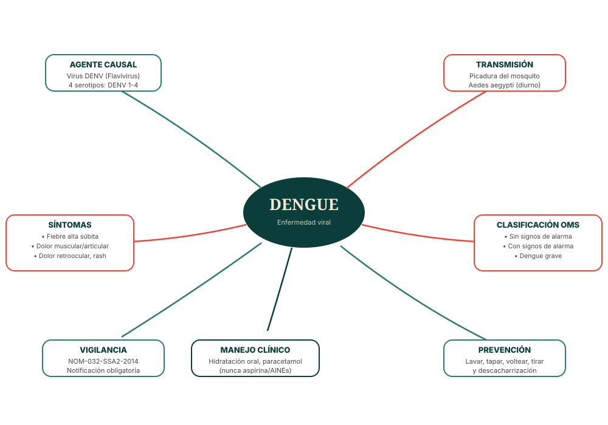

Visión general
Mapa mental del dengue
Un solo esquema con las siete ramas que resumen todo lo esencial: qué lo causa, cómo se transmite, cómo se manifiesta, cómo se clasifica, cómo se trata, cómo se previene y cómo se vigila.

Elaboración propia con base en CDC, OPS/OMS, NOM-032-SSA2-2014 y CENAPRECE. Ver referencias completas.
Resumen accesible
Las siete ramas, en texto
🦠 Agente causal
Virus del dengue (DENV), un Flavivirus con 4 serotipos (DENV-1 a DENV-4).
🦟 Transmisión
Picadura de la hembra del mosquito Aedes aegypti, de actividad diurna.
🤒 Síntomas
Fiebre súbita, dolor muscular y articular, dolor retroocular, sarpullido.
🩺 Clasificación OMS
Sin signos de alarma, con signos de alarma, o dengue grave.
💧 Manejo clínico
Hidratación oral o IV según grupo, paracetamol; nunca aspirina ni AINEs.
🧹 Prevención
Lavar, tapar, voltear y tirar recipientes que acumulen agua.
📋 Vigilancia epidemiológica
Notificación obligatoria e inmediata conforme a la NOM-032-SSA2-2014, con estudio de caso en las primeras 24 horas.